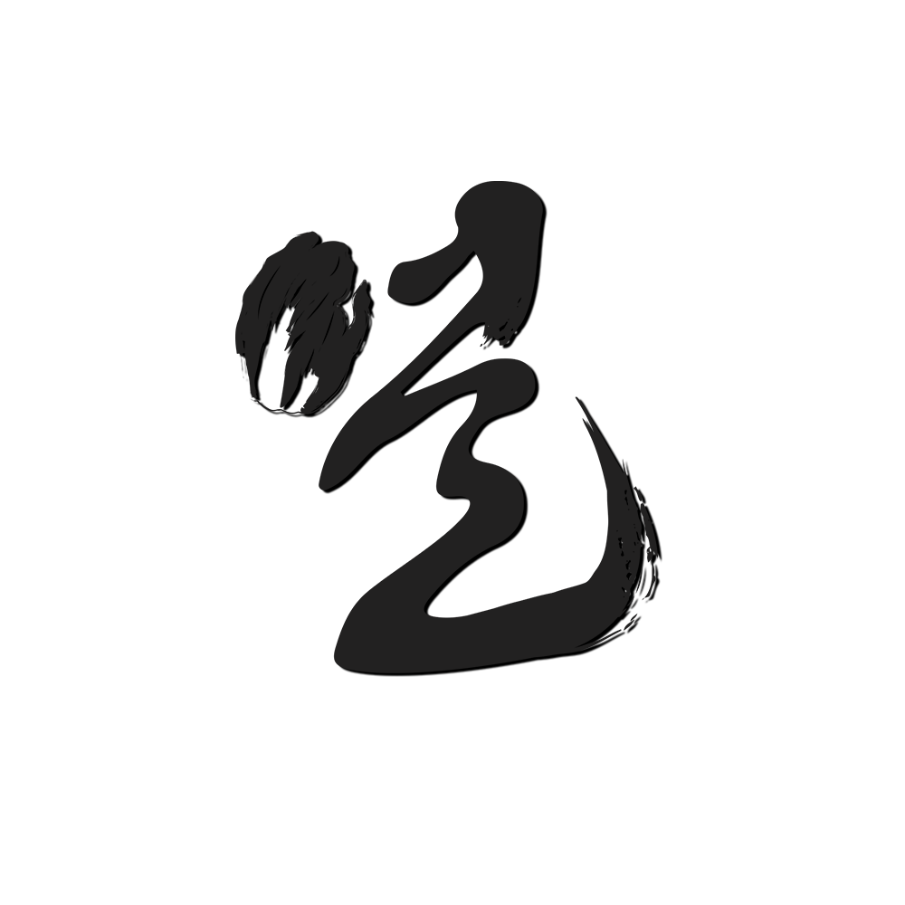

GFA · CRM
ARCHIVE
ARCHIVE / INTAKE
얼김치 원본 이미지는 이 브라우저에 저장됩니다. 등록한 원본도 바로 편집할 수 있습니다.
문구를 클릭해 바로 수정할 수 있습니다. 사각형은 드래그하고, 윤곽은 모서리를 차례로 찍은 뒤 영역 추가를 누르세요.
이동하거나 글자를 바꾸면 가려졌던 자리는 주변 색으로 채웁니다. 복잡한 배경은 편집기에서 사진으로 교체할 수 있습니다.